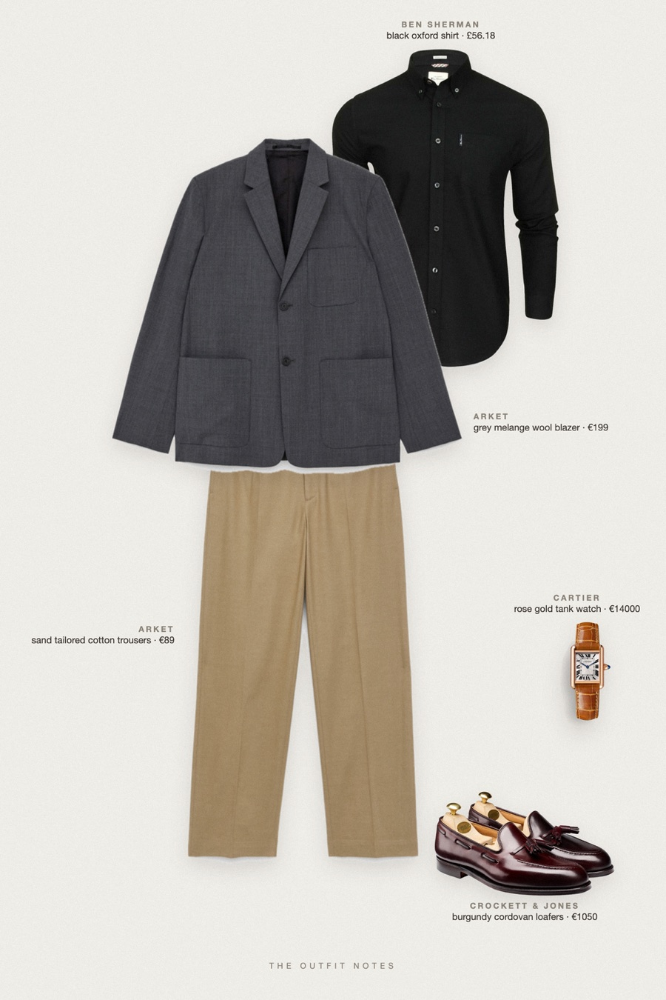
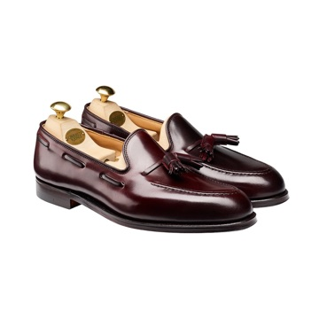
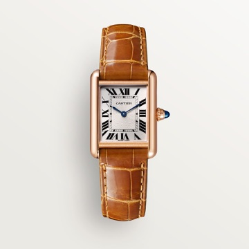

Midnight Blazer
black shirt, grey blazer, sand trousers

New Year's Eve outfit men and holiday party outfit: a black Ben Sherman oxford shirt worn open-collar under an ARKET grey melange wool blazer, sand tailored trousers and Crockett & Jones Cavendish burgundy loafers. A Cartier Tank Louis adds the glow. Classy party look, semi formal and stylish.
The pieces
This page contains affiliate links: if you buy through them, we may earn a commission at no extra cost to you. Disclosure.
 Ben Sherman
Ben Sherman
Black oxford shirt
Shop ARKET
ARKET
Grey melange wool blazer
Shop ARKET
ARKET
Sand tailored cotton trousers
Shop
Crockett & Jones
Burgundy cordovan loafers
Shop
Cartier
Rose gold tank watch
Shop
Prices are indicative, taken when the look was published, and may have changed. Pictures of the outfit are AI-generated illustrations of real products; the product photos are the retailers' own.
Published 2 October 2026.